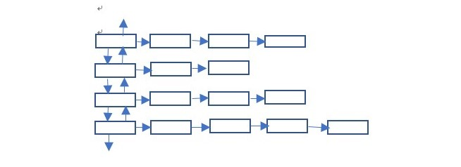
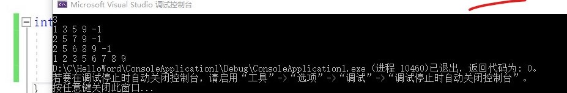

思路
假设有多组数据，每一组都是按从小到大的顺序输入的，设计如下数据结构

前面一列是每一组数据的首部，后面是真正的数据，首部的定义为：
struct head { Node* next; head* down; head* up; };
数据部分的定义为：
struct Node { int data; Node* next; };
1.我们称左上角为根，左下角为尾，根的前指针(up)和尾的后指针(down)为NULL，next指向数据，那么在输出的时候，只需要遍历第二列选出最小的数据即可，在输出该结点之后将该节点删除，并更新该数据结构。
2.定义两个指针p和q，分别用来遍历和指向最小数据。
a.如果q(指向最小数据的指针)指到了根，并且p->next->next=NULL,则表示根所在的一行已经输出完毕，需要更新根，于是判断根的下指针是否也为NULL，如果是，表示已经结束，如果不是则将下一行首部设置为根。
b.如果p->next->next不等于NULL，则只需要将p的next指向p的next的next即p->next = p->next->next。
c.如果q指向除根以外的首部，并且，后面有多的数据，则p->next = p->next->next，如果没有多余数据表示这一行已经全部输出，删除p和p->next指向的空间，并将p的上一行的首部的下指针指向p的下一行的首部，下一行的上指针指向p的上一行首部。
3.输出的时候只需要当前数据与前一个输出的数据不同即可。
代码：
1 namespace SORT {
2 using namespace std;
3 struct Node {//数据结点
4 int data;
5 Node* next;
6 };
7 struct head {//头结点
8 Node* next;
9 head* down;
10 head* up;
11 };
12 void Create(Node*& root) {
13 int tmp;
14 if (root == NULL) {
15 cin >> tmp;
16 if (tmp == -1)//输入-1是结束该行输入
17 return;
18 root = new Node;
19 root->data = tmp;
20 root->next = NULL;
21 Create(root->next);
22 }
23 return;
24 }
25 void Destory(head*& root) {
26 head* p = root;//循环遍历指针
27 head* q = root->down;//每次都指向最小
28 Node* tmp = NULL;
29 int num = 0;//保存前一次输出的值
30 while (p != NULL && q != NULL)
31 {
32 while (p != NULL) {
33 if (p->next->data < q->next->data) {
34 q = p;
35 p = p->down;
36 }
37 else {
38 p = p->down;
39 }
40 }
41 if (q->next->data != num) {
42 cout << q->next->data << " ";
43 num = q->next->data;
44 }
45 if (q->up == NULL) {
46 if (q->next->next == NULL) {
47 p = root;
48 if (root->down == NULL) {
49 delete root->next;
50 delete root;
51 return;
52 }
53 root->down->up = NULL;
54 root = root->down;
55 delete p->next;
56 delete p;
57 p = q = root;
58 }
59 else {
60 tmp = q->next;
61 q->next = q->next->next;
62 delete tmp;
63 tmp = NULL;
64 p = q = root;
65 }
66 }//if
67 else {
68 if (q->next->next == NULL) {
69 q->up->down = q->down;
70 if (q->down == NULL) {
71 q->up->down = NULL;
72 delete q->next;
73 delete q;
74 }
75 else {
76 q->down->up = q->up;
77 delete q->next;
78 delete q;
79 }
80 p = q = root;
81 }
82 else {
83 tmp = q->next;
84 q->next = q->next->next;
85 delete tmp;
86 tmp = NULL;
87 p = q = root;
88 }//else
89 }//else
90 }//while
91 }
92 void CreateHead(int n) {//n表示有几行数据
93 head* root = new head;
94 root->down = NULL;
95 root->up = NULL;
96 root->next = NULL;
97 Create(root->next);//第一行单独创建
98 head* p = root;
99 for (int i = 1; i < n; i++)
100 {
101 head* N = new head;
102 N->down = NULL;
103 N->next = NULL;
104 N->up = p;
105 p->down = N;
106 p = N;
107 Create(p->next);
108 }
109 Destory(root);
110 }
111 }
调用：
1 int main() {
2 int num;
3 std::cin >> num;
4 SORT::CreateHead(num);
5 }
运行结果：

如果有什么错误欢迎大家指正。